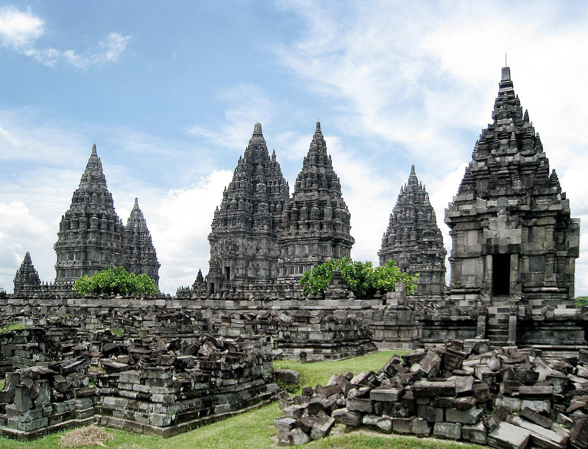
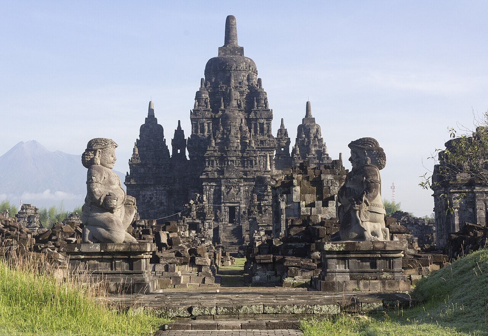
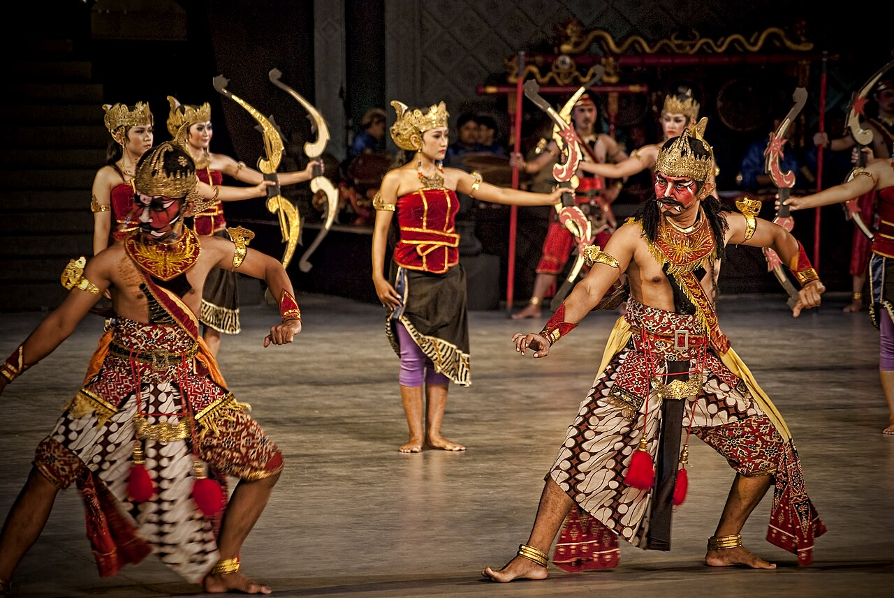
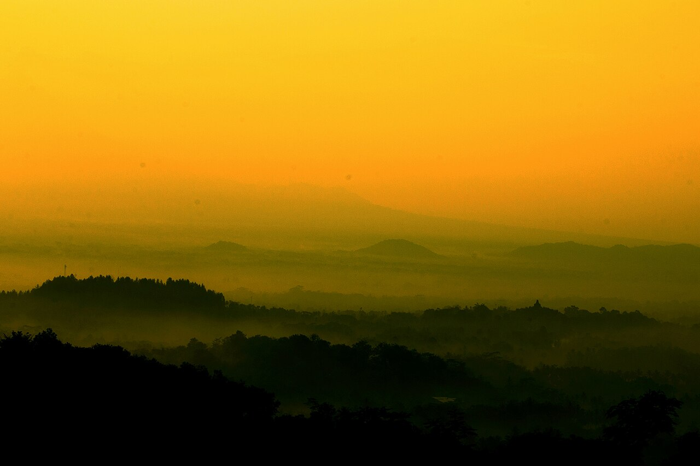
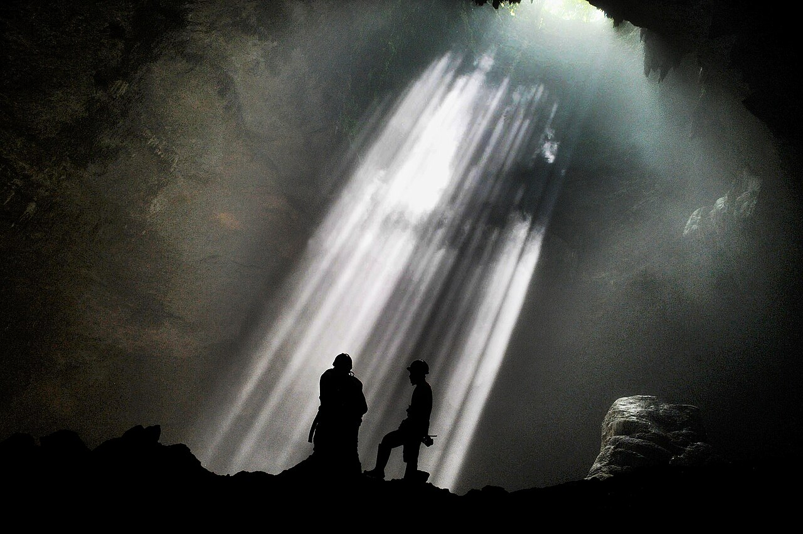
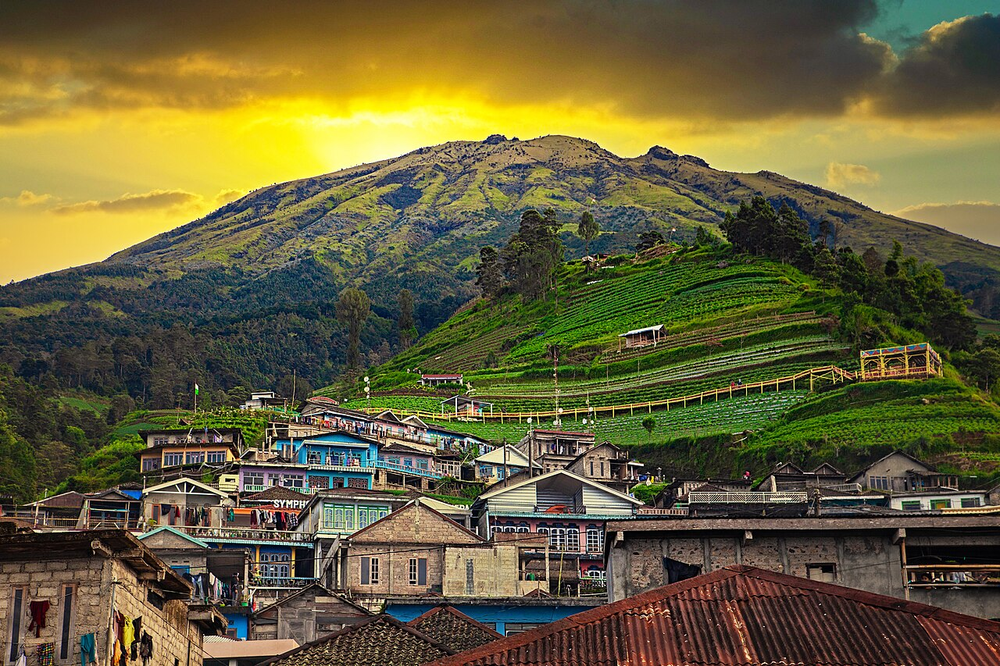
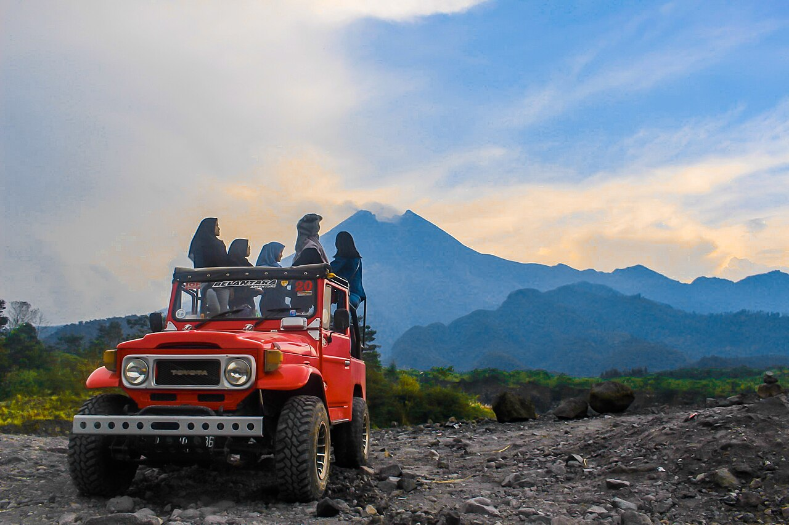

Java a son propre axe du monde : un volcan parmi les plus actifs de la planète au nord, un sultan qui gouverne toujours depuis son palais du XVIIIe siècle en son centre, et les vestiges de deux grandes traditions religieuses — hindoue et bouddhiste — élevés à quelques kilomètres l'un de l'autre il y a plus de mille ans.
Deux formules à trancher en équipe — 3 ou 5 jours. Arrivée confirmée : lundi 7 septembre, gare de Lempuyangan.
Jl. Banjarsari, Gedongkiwo, Mantrijeron, Daerah Istimewa Yogyakarta 55142 — villa privée avec piscine. Séjour du 7 au 11 septembre (check-out le 11) — 4 nuits, potentiellement 5 si on ajoute une nuit pour l'Option 2.
Quartier Mantrijeron/Gedongkiwo, au sud du Kraton — pas dans son enceinte immédiate malgré le nom du quartier
3,2 km / ~12 min du Kraton en voiture (41 min à pied — pas une distance de marche pour les visites)
3,2 km, ~12 min depuis Thera Villa — le trajet le plus court de tout le séjour, mais pas à pied
Fermé le lundi
25 000 Rp étranger adulte / 20 000 Rp enfant (source institutionnelle DIY, article daté 2023 — montant à reconfirmer). Guide de groupe en option ~150 000 Rp.

📷 Gunawan Kartapranata, CC BY-SA
🛕 Prambanan
🕐 10:30–12:00🛕 Culture💰 Payant, ~400k Rp🚗 47-50 min
Les tours hindoues du IXe siècle, le plus grand complexe du pays.
~400 000-500 000 Rp étranger, chiffre variable selon les relevés — confirmer le prix exact au moment de l'achat sur la billetterie officielle, pas figer ce chiffre

📷 Chris Woodrich, CC BY-SA
🛕 Candi Sewumême complexe, en plus
🕐 12:00–13:00🛕 Culture💰 Inclus dans le billet Prambanan🚗 ≈2 km (navette)
Le deuxième plus grand site bouddhique du pays — beaucoup moins de foule que Prambanan.
⚠️ Aucune source officielle ou fiable trouvée — hors du périmètre TWC, sources concordantes mais non institutionnelles citent ~15 000 Rp (parfois 5 000 Rp) et des horaires variables (7h30-17h ou 8h-16h). À confirmer sur place.

📷 Philip Nalangan, CC BY-SA
🎭 Ramayana Ballet
🕐 19:30–21:30 (portes 18h30)🛕 Culture💰 Payant, 150k-550k Rp🚗 sur place
200 danseurs, du feu, Prambanan illuminé en fond de scène. Assis, aucun effort physique.
Juste après Prambanan, sur place — pas de trajet supplémentaire
2nd Class ~150-165k Rp à VIP ~450-550k Rp
⚠️ 3 versions existent : plein air à Prambanan (mar/jeu/sam), indoor même site (ven), ou Purawisata toute l'année (lun/mer/ven/sam). Le 8 septembre 2026 est un mardi — a priori plein air, à reconfirmer près de la date.
Jour 3 — Borobudur
Une seule sortie, retour tôt, après-midi libre.
🌿 Nature🚶 Autonomie

📷 Nurokhman Riyadi, CC BY-SA
🌅 Punthuk Setumbuoptionnel, lève-tôt
🕐 05:40–06:15🌿 Nature💰 Payant, 50k Rp🚗 2,4 km de Borobudur
Sunrise sur le Merapi et Borobudur dans la brume. À proposer, pas à imposer.
Ouvre 4h du matin — départ hôtel ~4h30 pour qui veut, rejoint le reste du groupe à Borobudur ensuite
50 000 Rp, largement moins cher que le sunrise depuis le temple (~1M Rp/pers)
⚠️ Géré par la communauté du village (pas d'organisme officiel/gouvernemental) — meilleure source disponible : compte Instagram @punthuksetumbu. Prix confirmé par plusieurs avis indépendants concordants, pas par une billetterie officielle.
75-80 km, 2h-2h20 depuis Thera Villa selon trafic — gros trajet pour une simple baignade, à peser sérieusement
8 000 Rp/pers, ouvert 24h/24. Coûts annexes : parking 5 000 Rp (voiture) / 2 000 Rp (moto). Source : presse (Kompas), pas un site gouvernemental direct, mais citant le gestionnaire officiel.

📷 Arie Bas, CC BY-SA
Variante B — pimentée
🕳️ Goa Jomblang + Pindul Cave
🕐 08:00–14:30🧗 Aventure💰 À partir de 12€/pers (partagé)🚗 1h40-1h55
Descente en rappel dans la grotte + tubing sur rivière souterraine à Pindul. Remplace la plage ce jour-là, ne se cumule pas avec elle.
50-64 km, 1h40-1h55 depuis Thera Villa selon la route
Produit vérifié : "Jomblang Cave, Pindul Cave Tubing & River Tubing" (Java Cultural Wonders), 8-10h, à partir de 12€/pers en groupe partagé, 5★/12 avis. Inclut transfert, guide, eau, déjeuner et entrées.
Réservation privée directe : 62-105$/pers — nettement plus cher que le tarif groupe partagé ci-dessus (12€/pers).
⚠️ Rappel en grotte, mauvais fit pour une partie du groupe (dame de 60 ans, profil anti-conso) — à proposer explicitement comme option sous-groupe, jamais comme sortie de groupe par défaut.
— Fin du programme si l'équipe choisit l'Option 1 —
Jour 5 — Plateau de Dieng Option 2
Day-trip depuis Yogya, horaires normaux sauf si le sunrise Sikunir est retenu.
GetYourGuide "12-Hour Guided Dieng Plateau Sunrise Trip", 46€/pers confirmé, 4,8★/28 avis, petit groupe (8 max) — inclut Sikunir, Batu Pandang Hill, Kawah Sikidang et Candi Arjuna, transferts et entrées
Coût annexe non financier : plusieurs avis insistent sur le froid (prévoir une veste chaude) et le trajet de 4h aller — sunrise non garanti si nuageux
⚠️ Même format que Punthuk Setumbu du Jour 3 (montée avant l'aube, point de vue brumeux) — doublon d'expérience à trancher en équipe, pas les deux sunrises par défaut.
⚠️ Aucune billetterie officielle en ligne trouvée (l'organisme de gestion, Disparbud Wonosobo, existe mais n'affiche aucun tarif) — les prix circulant sur la presse et les sites d'agences varient de 12 000 à 30 000 Rp par site selon la source, parfois du simple au triple pour le même site. Prévoir du liquide et confirmer sur place plutôt que de se fier à un chiffre figé. Pour la variante day-trip guidée avec entrées incluses, voir Bukit Sikunir ci-dessus.

📷 Ganjarmustika1904, CC BY-SA
🏘️ Nepal Van Java
🕐 13:30–14:00🛕 Culture💰 à vérifier (petite entrée probable)🚗 sur le retour de Dieng
Village aux maisons peintes façon "petit Népal" — pause photo ludique, pas une immersion locale authentique.
Jeep, sunset + coulée de lave — pas l'ascension nocturne au sommet.
🧗 Aventure douce🎟️ GetYourGuide

📷 Wrsrachma, CC BY-SA
⛰️ Mount Merapi Jeep Sunset & Lava Flow Night Tour
🕐 ~16h-22h (6h)🧗 Aventure douce💰 Payant, 45€/pers🚗 en jeep, inclus
Circuit en jeep sur les flancs du volcan, vue sur les coulées de lave au crépuscule — accessible à tout le groupe, sans effort physique ni encadrement spécialisé.
Produit à réserver : "Mount Merapi Jeep Sunset & Lava Flow Night Tour", 6h, 45€/pers, 4★/5 avis — jeep + coucher de soleil aux points de vue + coulées de lave observées depuis un café local en soirée.
Coûts/pièges cachés identifiés dans les avis : la vue sur la lave n'est pas garantie (dépend de la météo/activité volcanique réelle, précisé noir sur blanc par l'opérateur) ; un client a payé sans avoir la partie "lave" suite à une confusion sur le déroulé — bien faire confirmer par écrit avant le jour J que la vision de la lave fait partie du programme prévu, pas une option distincte.
Ce qui reste écarté, et pourquoi
🚡 Pantai Timang (gondole suspendue)
Gondole artisanale payante entre deux opérateurs rivaux, même famille de risque que Jomblang. Mauvais fit pour une dame de 60 ans et un profil anti-conso qui n'a rien à faire d'un gadget touristique.
🛕 Solo (Candi Sukuh, Candi Cetho)
2h-3h30 de route pour deux temples de plus, en plus de Prambanan/Sewu/Plaosan déjà au programme — redondance de typologie (Culture) plutôt qu'un vrai ajout.
⛰️ Ascension nocturne du Merapi
Envisagée un temps, remplacée par la version jeep sunset+lave (Jour 6) : même volcan, accessible à tout le groupe au lieu d'un sous-groupe seul, sans nuit blanche ni dénivelé technique.